להצטרף לבד או עם חברים
אפשר להזמין מקום אישי בסיור המשותף. בחרו תאריך ב־GetYourGuide כדי לראות זמינות, מחירים מעודכנים והטבות בתוקף.
לתאריכים ולהזמנה ב־GetYourGuideטעימות, תבלינים וסיפורים מהמורשת הפרסית
טועמים מהשוק, מריחים תבלינים ושומעים את סיפורי האנשים והמסורות של לוינסקי. ענבל, מדריכה מקומית עם ידע באיורוודה ומורשת פרסית־איראנית, מחברת בין הטעמים, הצמחים והסיפורים. אפשר להצטרף לבד, בזוג או עם חברים לסיור משותף, או לתאם סיור פרטי לקבוצה.
כ־2–2.5 שעות · טעימות, נשנושים, חליטה איורוודית וערכת צמחים ותבלינים כלולים · ארוחת צהריים בתשלום נפרד.
צמחים, זיכרונות והדרכים שביניהם
החמימות של הקינמון, הריח של ניצני ורדים, תערובת תבלינים מוכרת: בשוק לוינסקי, חומרי גלם יומיומיים יכולים לפתוח דלת למקום רחוק. עם ענבל, מדריכה מקומית, מגלים את הזיכרונות המשפחתיים ואת המסעות שהביאו לכאן האנשים שהפכו את השוק לבית.
ענבל, מדריכה מקומית, מחברת בין הידע שלה באיורוודה למורשת הפרסית־איראנית שלה. דרך סיפורים על דרכי המשי, התבלינים והבשמים, מגלים איך חומרי גלם ורעיונות נדדו בין הודו, פרס והים התיכון.
בלוינסקי של היום, הסיפור הרחב הופך לאישי. שומעים על קהילות מיוון, פרס, טורקיה והבלקן, שהביאו איתן טעמים אהובים ומסורות אל בית חדש בתל אביב. ענבל מפגישה בין חילופי התרבויות של פעם לחיים בשוק של היום, דרך סיפורים, שאלות ורעיונות מעשיים שאפשר לקחת למטבח בבית.
ימים א׳–ו׳ בשעה 9:30, בהתאם לזמינות, עד 20 משתתפים. נפגשים בסמטת אלוף בצלות בתל אביב־יפו; הוראות המפגש המלאות יופיעו בהזמנה.
אפשר להזמין מקום אישי בסיור המשותף. בחרו תאריך ב־GetYourGuide כדי לראות זמינות, מחירים מעודכנים והטבות בתוקף.
לתאריכים ולהזמנה ב־GetYourGuideאפשר לבחור באפשרות הפרטית ב־GetYourGuide, או לפנות לענבל לקבלת הצעה מותאמת. שעות התחלה אחרות ותוספות בתשלום נפרד אפשר לתאם מראש, בהתאם לזמינות.
לתכנון סיור מותאם לקבוצהלקבוצות מאורגנות
ענבל מחברת בין הידע שלה באיורוודה למורשת הפרסית־איראנית ולסיפורי האנשים שהביאו לשוק טעמים ומסורות מהבית. דרך צמחים, תבלינים וחליטות מגלים איך תרבויות נפגשות בתל אביב. אפשר לתאם לקבוצה ארוחת צהריים או טעימות נוספות בתשלום נפרד.
שלחו מספר משתתפים, תאריך רצוי, שפה מועדפת, רגישויות מזון, מטרת הפעילות והאם תרצו לשלב ארוחת צהריים, טעימות נוספות או פינוקים נוספים, ותקבלו הצעה מותאמת.
פתיחת בקשה מוכנה בוואטסאפחוויה קלילה שמאפשרת לצוות לדבר, לטעום ולהכיר את תל אביב מזווית אחרת.
מתאים ל־offsite או ליום צוות קליל, עם זמן לדבר, לטעום ולהכיר.
סיור צמחים ותרבות בקצב נינוח, עם אפשרות להתאים את המסלול לצורכי הקבוצה.
לא רק טעימות: הסבר על תבלינים, חליטות, תרבות איראנית, תזונה הודית והקשר בין מטבח, בית ומסורת.
אפשר לקיים בעברית או באנגלית, עם דגש על תל אביב, שוק לוינסקי ותרבויות אוכל.
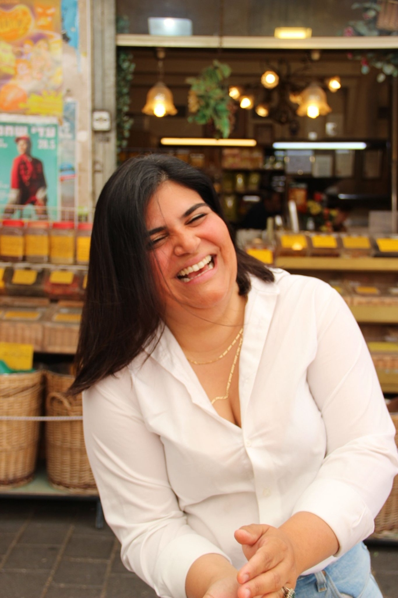
בין הדוכנים פוגשים צמחים ותבלינים מוכרים מזווית חדשה. ענבל מחברת בין מסורות איורוודיות, המורשת המשפחתית הפרסית־איראנית שלה והסיפורים של שוק לוינסקי.
במהלך הסיור נכיר שימושים מסורתיים בתבלינים ובחליטות, נלמד איך לבחור ולאחסן אותם, ונקבל רעיונות פשוטים לשילוב במטבח הביתי. התוכן לימודי ותרבותי ואינו ייעוץ רפואי אישי.
ניתן לקיים את הסיור בעברית או באנגלית. הוא מתאים גם לאורחים מחו"ל, קבוצות בינלאומיות, צוותי הייטק, הגיל השלישי, ימי כיף, ימי גיבוש והשתלמויות שמחפשות חוויית צמחים, איורוודה ותרבות פרטית ומותאמת בתל אביב.
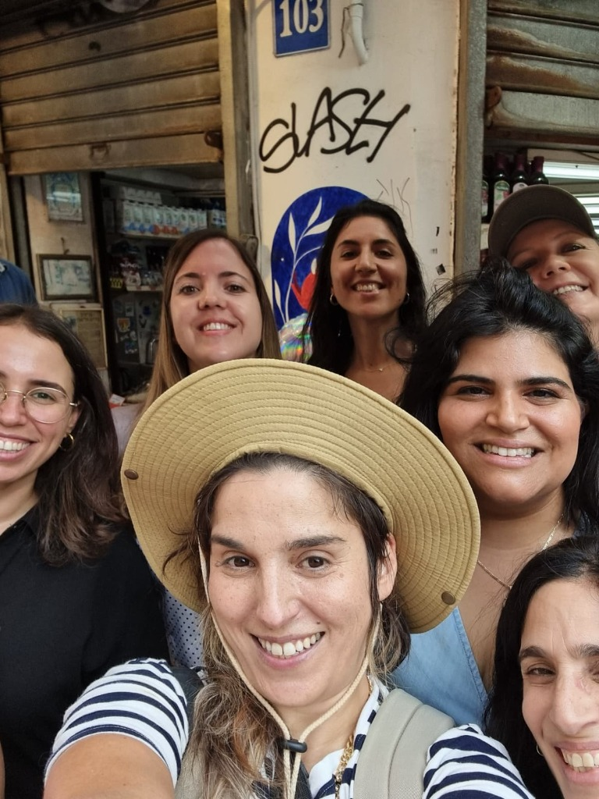
סיור חווייתי המיועד להורים ותינוקות (עד שלב הזחילה), ומחבר בין מסורות אוכל, תבלינים וחיי המשפחה כיום.
נכיר חליטות ותבלינים נפוצים ונקבל רעיונות מעשיים וזהירים לשימוש ביתי.
פרטים פרקטיים
הסיור נמשך בדרך כלל כ־2–2.5 שעות ומתחיל ב־9:30 בסמטת אלוף בצלות בתל אביב־יפו. המסלול עשוי להשתנות לפי קצב ההליכה וזמינות הדוכנים. שעות אחרות לסיור פרטי יש לתאם מראש.
המסלול הרגיל נגיש לכיסאות גלגלים. כדאי לשתף מראש בצורכי ניידות כדי שענבל תוכל לתאם איתכם את הקצב ואת ההתאמות הדרושות.
שלחו מספר משתתפים, תאריך או טווח תאריכים, שפה רצויה, רגישויות מזון, מטרת הפעילות והאם תרצו לשלב ארוחת צהריים, טעימות נוספות או פינוקים נוספים, ותקבלו הצעה מותאמת.
הסיור משתף ידע מסורתי על אוכל, תבלינים וצמחי מרפא באופן חווייתי ולא רפואי. הוא אינו מחליף אבחון, ייעוץ או טיפול רפואי אישי.
לומדים איך לבחור, לאחסן ולשלב תבלינים וחליטות במטבח, בלי להפוך את הסיור להרצאה רפואית.
מגלים איך קהילות מיוון, פרס, טורקיה והבלקן הביאו איתן מסורות וטעמים, ואיך הם נפגשים בשוק לוינסקי של היום.
אפשר להצטרף לסיור פתוח או לתאם סיור פרטי לקבוצה, צוות הייטק, הגיל השלישי, יום כיף, יום גיבוש, אירוח לקוחות או מפגש תוכן עם עומק וחוויה.
הסיור מציע היכרות קבוצתית עם תבלינים, חליטות ומסורות אוכל. לשאלות אישיות על תזונה, עיכול או שגרה אפשר להמשיך משם גם לקליניקה ולקבל ליווי מותאם.
כן. אפשר להזמין מקום אישי בסיור המשותף דרך GetYourGuide, או לבחור באפשרות הפרטית לקבוצה שלכם. זמינות, מחירים והטבות מעודכנים מופיעים שם לאחר בחירת תאריך. להצעה מותאמת לקבוצה אפשר לפנות לענבל בוואטסאפ.
ענבל מחברת בין איורוודה למורשת הפרסית־איראנית שלה ולסיפורי ההגירה של שוק לוינסקי. מכירים צמחים, תבלינים ומסורות דרך שיחה וגילוי, עם טעימות, חליטה איורוודית וערכת היכרות עם צמחים ותבלינים להמשך בבית.
כן. אפשר לקיים את הסיור בעברית או באנגלית, והוא מתאים לקבוצות ישראליות, אורחים מחו״ל, צוותים בינלאומיים וקבוצות שמחפשות חוויה מקומית וברורה בשוק לוינסקי.
כן. באנגלית מחפשים לפעמים את שוק לוינסקי גם כ־Levinski Market. הסיור מתייחס לאותו אזור בשוק לוינסקי בתל אביב, ומתמקד בצמחים, איורוודה, תבלינים וסיפורי תרבות.
זהו סיור טעימות עם היכרות עם תבלינים, צמחים וסיפורי תרבות, בהדרכת ענבל ובזווית של איורוודה והמורשת הפרסית. טעימות, נשנושים וחליטה כלולים; ארוחת צהריים מלאה אינה כלולה. התוכן לימודי ותרבותי ואינו ייעוץ רפואי אישי.
כל סיור מתוכנן באופן אישי לפי המועד, פרטי הקבוצה ואופי הפעילות. שלחו את הפרטים בוואטסאפ ותקבלו הצעה מותאמת, עם אפשרות לשלב ארוחת צהריים, טעימות נוספות ופינוקים נוספים בתיאום מראש.
כן. ניתן לשלב ארוחת צהריים, טעימות נוספות או פינוקים נוספים בתיאום מראש. הפרטים נסגרים כחלק מההצעה המותאמת לפי הקבוצה, המסלול, השעה והצרכים התזונתיים.
שלחו מספר משתתפים, תאריך או טווח תאריכים, שפה רצויה, רגישויות מזון, מטרת הפעילות והאם תרצו לשלב ארוחת צהריים, טעימות נוספות או פינוקים נוספים.
כן. לפני שנפרדים, ענבל יכולה להמליץ על מקומות לארוחת צהריים ולעזור להתמצא בחנויות ובשכונה, כדי שתוכלו להמשיך לגלות את האזור בקצב שלכם. הארוחה והרכישות אחרי הסיור הן בתשלום נפרד.
בדרך כלל כשעתיים עד שעתיים וחצי. המסלול המדויק נקבע לפי גודל הקבוצה, קצב ההליכה, זמינות הדוכנים ורגישויות המזון.
מתאמים בפשטות
01
עוברים על מספר המשתתפים, התאריך, השפה, מטרת האירוע ורגישויות המזון.
02
בוחרים קצב, תחנות וטעימות שמתאימים לקבוצה ולזמינות בשוק.
03
מקבלים הצעה מסודרת ומאשרים את המועד, פרטי הסיור ונקודת המפגש.
מוזמנים להצטרף למסע של טעמים, ריחות וסיפורים שמחבר בין ידע עתיק, שוק מקומי והמטבח של היום.
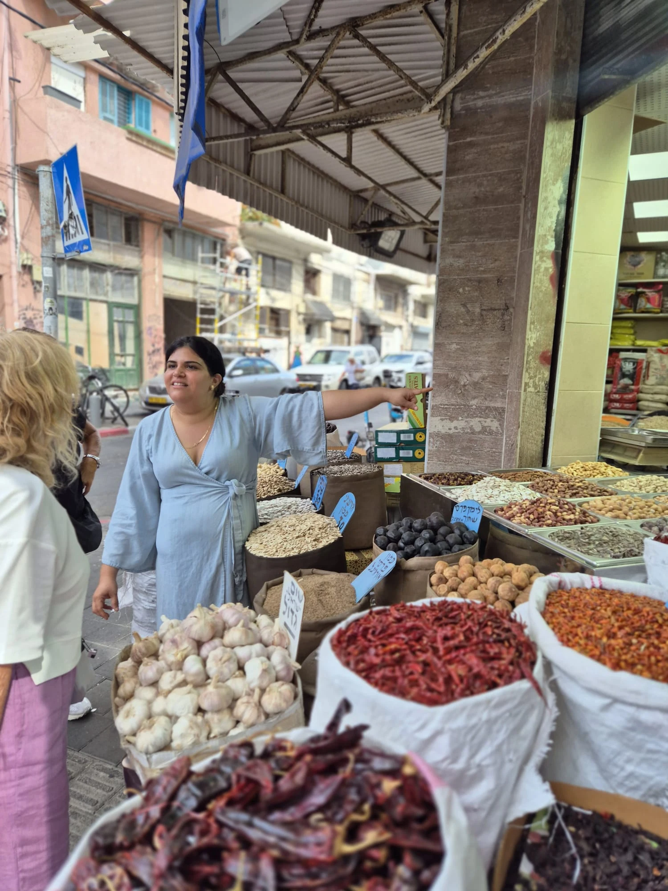
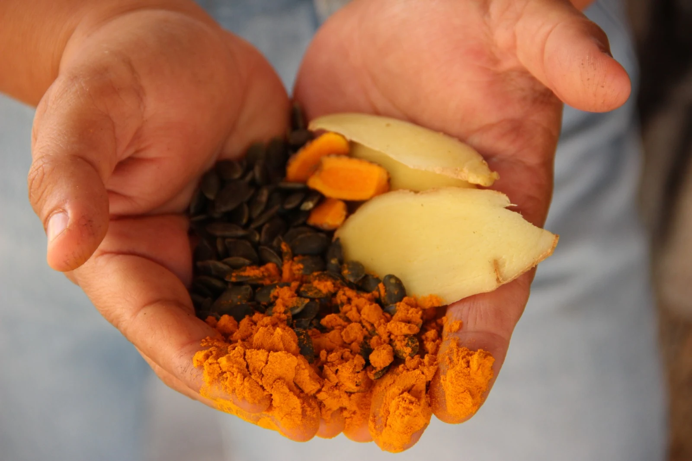
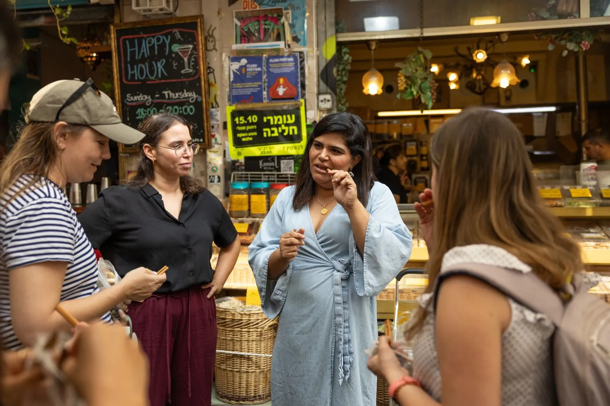
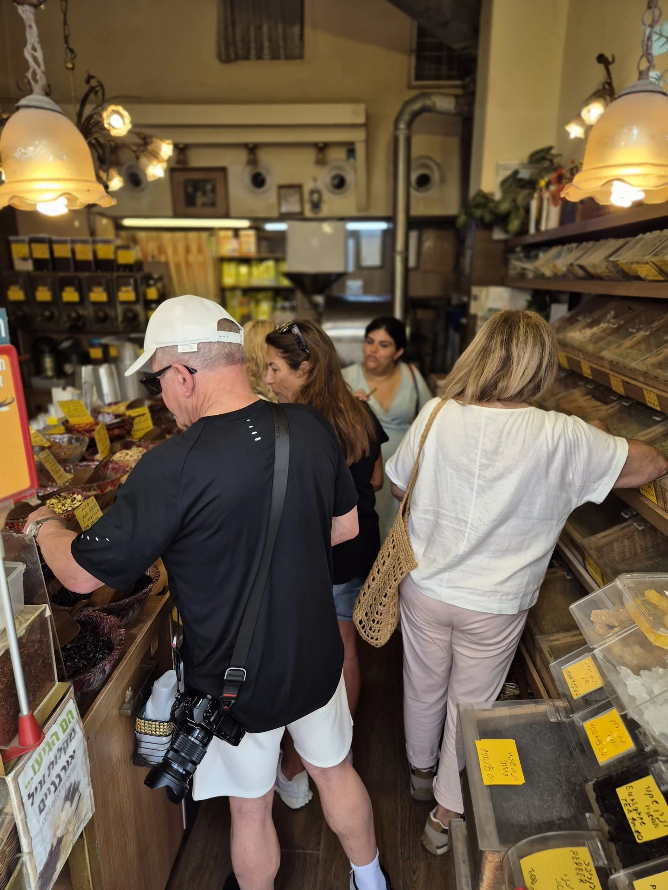
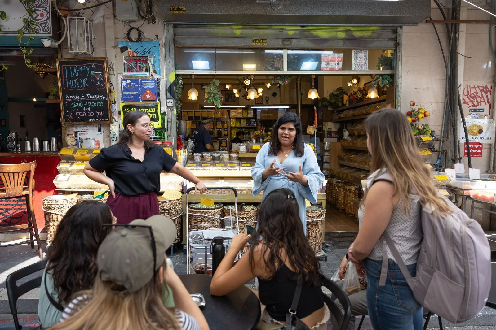
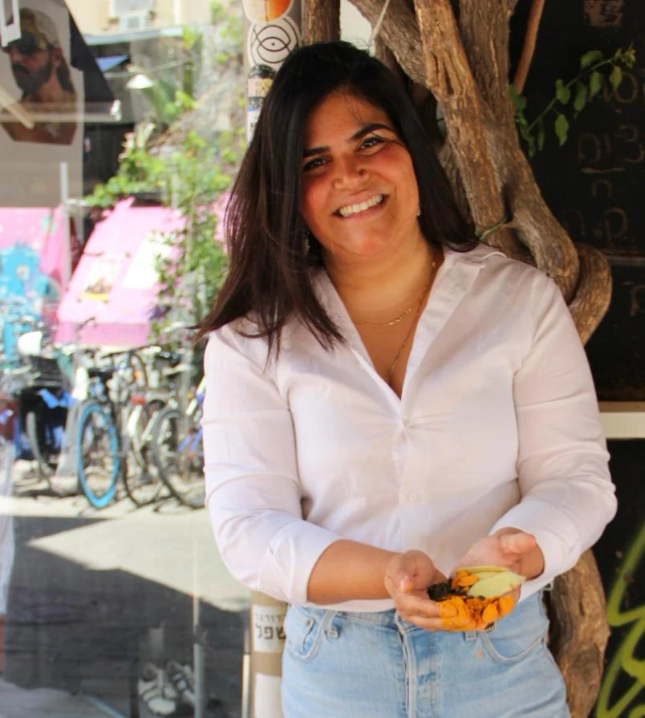
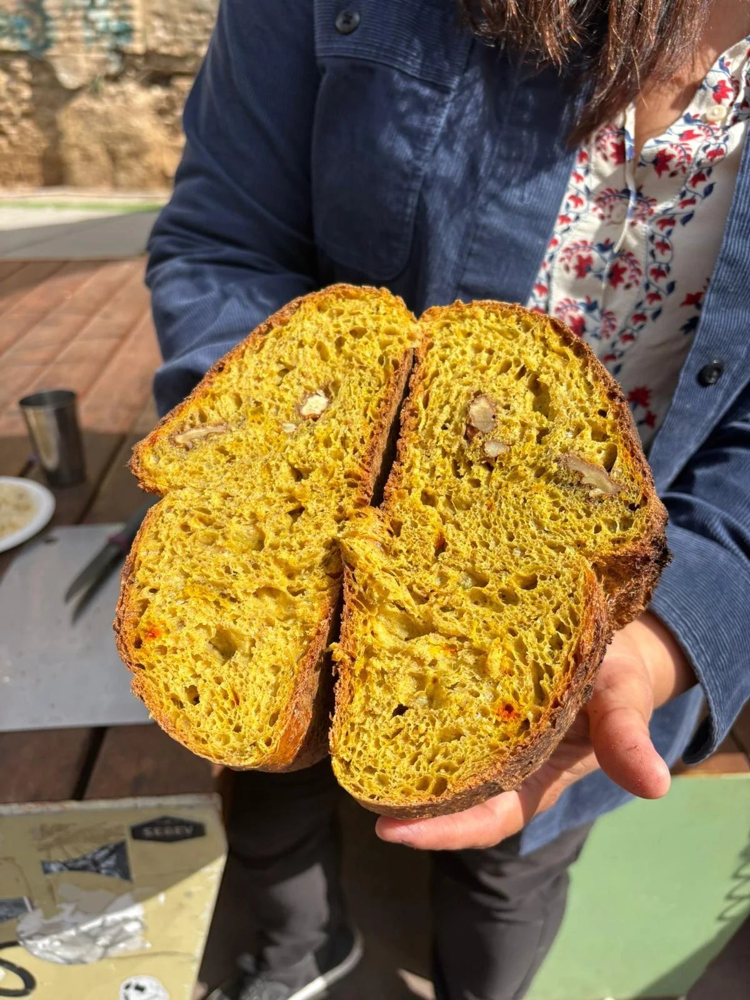
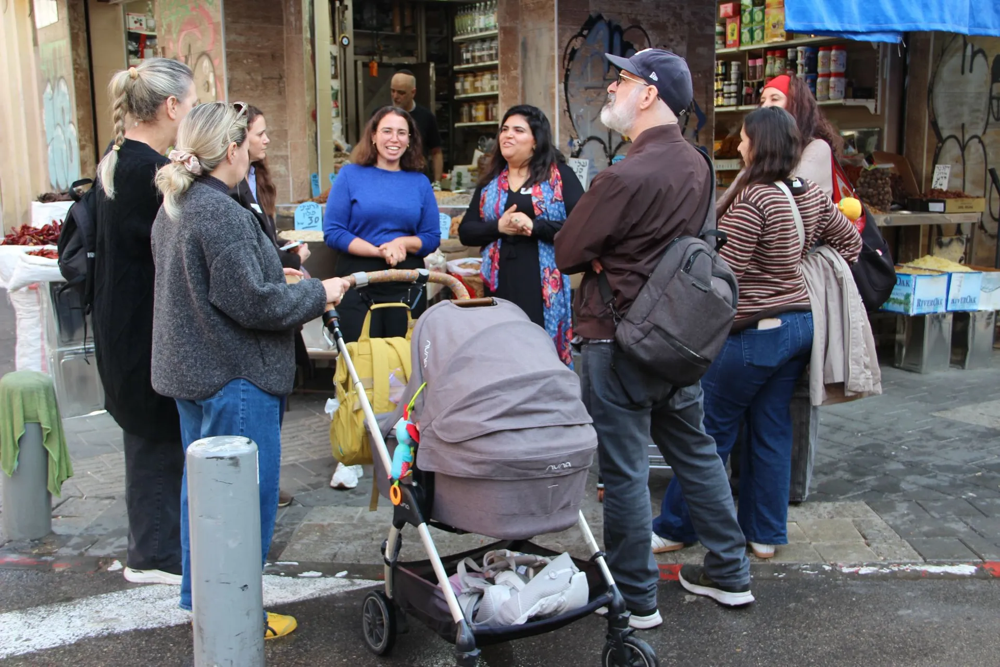
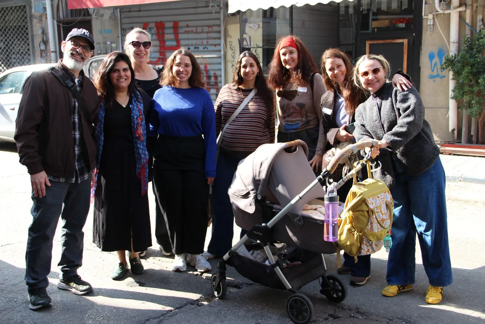